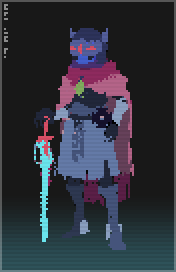

The Drifter, referred to on his tarot card as "The Magician", is the main playable character in Hyper Light Drifter. He is a member of the feline Blu species who has been infected with a strange terminal disease. The Drifter came to the Land of Light from the Northern Realms and travels the new continent in search of a cure.
